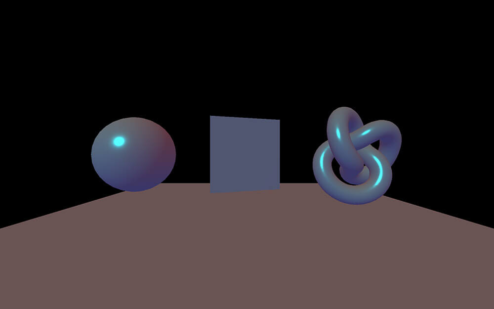

Sommaire
La gestion des lumières est très gourmande en terme de performance
Pour fonctionner, nous devons utiliser des Materials réagissant à la lumière
et rajouter les lumières dans la scène
Afin de mieux visualiser les lumières, il est conseillé de mettre en place une petite scène avec un sol
// Material
const material = new THREE.MeshStandardMaterial({
color: 0xffffff,
roughness: 0.3,
metalness: 0.3
})
// Sphere
const sphere = new THREE.Mesh(new THREE.SphereGeometry(2, 16, 16), material)
sphere.position.x = - 6
objectsGroup.add(sphere)
// Plane
const plane = new THREE.Mesh(new THREE.PlaneGeometry(4, 4, 40, 40), material)
objectsGroup.add(plane)
// Torus Knot
const torusKnot = new THREE.Mesh(new THREE.TorusKnotGeometry(1.5, 0.5, 128, 16), material)
torusKnot.position.x = 6
objectsGroup.add(torusKnot)
// Floor
const floor = new THREE.Mesh(new THREE.PlaneBufferGeometry(20, 20, 1, 1), material)
floor.position.y = - 3
floor.rotation.x -= Math.PI * 0.5
objectsGroup.add(floor)
AmbientLight est une lumière omnidirectionnelle
On l'utilise en général pour s'assurer que toutes les faces des objets soient un minimum visibles
const ambientLight = new THREE.AmbientLight(0xffffff, 0.3)
scene.add(ambientLight)
DirectionalLight est une lumière directionnelle dont les rayons de lumières sont parallèles
On peut l'utiliser pour simuler l'éclairage du soleil
La direction se fait entre les propriétés position et target
La puissance de la lumière ne varie pas avec la distance
const directionalLight = new THREE.DirectionalLight(0x00fffc, 0.3)
directionalLight.position.x = - 2
directionalLight.position.y = 3
directionalLight.position.z = 4
scene.add(directionalLight)
HemisphereLight est une lumière qui éclaire tel un dôme autour de la scène
La couleur vari entre la skyColor (premier paramètre et haut du dôme) et la groundColor (deuxième paramètre et bas du dôme)
Utile pour créer une ambiance non uniforme
const hemisphereLight = new THREE.HemisphereLight(0xff0000, 0x0000ff, 0.3)
scene.add(hemisphereLight)

PointLight est un point de lumière qui se propage dans toutes les directions
Plus l'objet éclairé est proche, plus l'intensité de la lumière sera forte
Utile pour créer des éclairages tel qu'un briquet, une led ou une torche
const pointLight = new THREE.PointLight(0xff9000, 1, 10)
pointLight.position.x = 2
pointLight.position.y = 3
pointLight.position.z = 4
scene.add(pointLight)
RectAreaLight est un carré de lumière qui se propage dans son sens de rotation avec une légère diffusion de la lumière
Il est conseillé d'utiliser lookAt pour diriger la lumière facilement
Utile pour créer des éclairages style photoshoot
const rectAreaLight = new THREE.RectAreaLight(0x4e00ff, 3, 5, 5)
rectAreaLight.position.x = 5
rectAreaLight.position.z = 5
rectAreaLight.position.y = - 3
rectAreaLight.lookAt(new THREE.Vector3())
scene.add(rectAreaLight)
SpotLight est un cône de lumière qui se propage vers sa propriété target (qui est un Object3D) avec une légère diffusion de la lumière
Puisque le target est un objet 3D, il vaut mieux le rajouter à la scène
Utile pour créer des éclairages style lampe torche
const spotLight = new THREE.SpotLight(0x00ff9c, 1, 0, Math.PI * 0.2, 0.5)
spotLight.position.z = 3
spotLight.position.y = 2
scene.add(spotLight)
spotLight.target.position.z = - 2
scene.add(spotLight.target)
Code final avec toutes les lumières
/**
* Lights
*/
const ambientLight = new THREE.AmbientLight(0xffffff, 0.3)
scene.add(ambientLight)
const directionalLight = new THREE.DirectionalLight(0x00fffc, 0.3)
directionalLight.position.x = - 2
directionalLight.position.y = 3
directionalLight.position.z = 4
scene.add(directionalLight)
const hemisphereLight = new THREE.HemisphereLight(0xff0000, 0x0000ff, 0.3)
scene.add(hemisphereLight)
const pointLight = new THREE.PointLight(0xff9000, 1, 10)
pointLight.position.x = 2
pointLight.position.y = 3
pointLight.position.z = 4
scene.add(pointLight)
const rectAreaLight = new THREE.RectAreaLight(0x4e00ff, 3, 5, 5)
rectAreaLight.position.x = 5
rectAreaLight.position.z = 5
rectAreaLight.position.y = - 3
rectAreaLight.lookAt(new THREE.Vector3())
scene.add(rectAreaLight)
const spotLight = new THREE.SpotLight(0x00ff9c, 1, 0, Math.PI * 0.2, 0.5)
spotLight.position.z = 3
spotLight.position.y = 2
scene.add(spotLight)
spotLight.target.position.z = - 2
scene.add(spotLight.target)
La majorité des Lights supportent des helpers
Les helpers permettent de visualiser la forme et la direction des lights
Il faut les initialiser et les rajouter à la scène
const directionalLightHelper = new THREE.DirectionalLightHelper(directionalLight)
scene.add(directionalLightHelper)
const hemisphereLightHelper = new THREE.HemisphereLightHelper(hemisphereLight)
scene.add(hemisphereLightHelper)
const pointLightHelper = new THREE.PointLightHelper(pointLight)
scene.add(pointLightHelper)
const spotLightHelper = new THREE.SpotLightHelper(spotLight)
scene.add(spotLightHelper)
Les ombres ont toujours été un challenge pour la 3D temps réel. Même aujourd'hui, avec les cartes graphiques actuelles, les développeurs doivent faire preuve d'ingéniosité pour afficher des ombres réalistes et performantes
Three.js intègre une gestion basique et peu réaliste des ombres, mais qui peut parfois suffire
Nous devons avertir le renderer que des ombres vont être utilisées
renderer.shadowMap.enabled = true
Nous devons ensuite avertir si chaque objet (Mesh) doit générer une ombre (castShadow) et/ou recevoir des ombres (receiveShadow)
object.castShadow = true
object.receiveShadow = true
Il est important de n'activer les ombres que sur les objets le nécessitant
sphere.castShadow = true
sphere.receiveShadow = true
plane.castShadow = true
plane.receiveShadow = true
torusKnot.castShadow = true
torusKnot.receiveShadow = true
floor.receiveShadow = true
⚠️ Toutes les lumières ne gèrent pas des ombres
Liste des lumières qui gèrent les ombres :
Nous devons définir pour chaque lumière si elle doit générer des ombres
directionalLight.castShadow = true
pointLight.castShadow = true
spotLight.castShadow = true
Comme vous pouvez le voir, la combinaison de plusieurs lumi√®res qui g√®rent des ombres √† un r√©sultat d√©cevant üòß
Code final pour gérer les ombres
renderer.shadowMap.enabled = true
sphere.castShadow = true
sphere.receiveShadow = true
plane.castShadow = true
plane.receiveShadow = true
torusKnot.castShadow = true
torusKnot.receiveShadow = true
floor.receiveShadow = true
directionalLight.castShadow = true
pointLight.castShadow = true
spotLight.castShadow = true
Comme vous pouvez le voir, le résultat est décevant
Au dessus d'une ou deux sources de lumières, Three.js aura du mal à afficher les ombres
Si vous le pouvez, utilisez des astuces tel que le baking ou de fausses ombres qui imitent la forme qu'aurait du avoir l'ombre